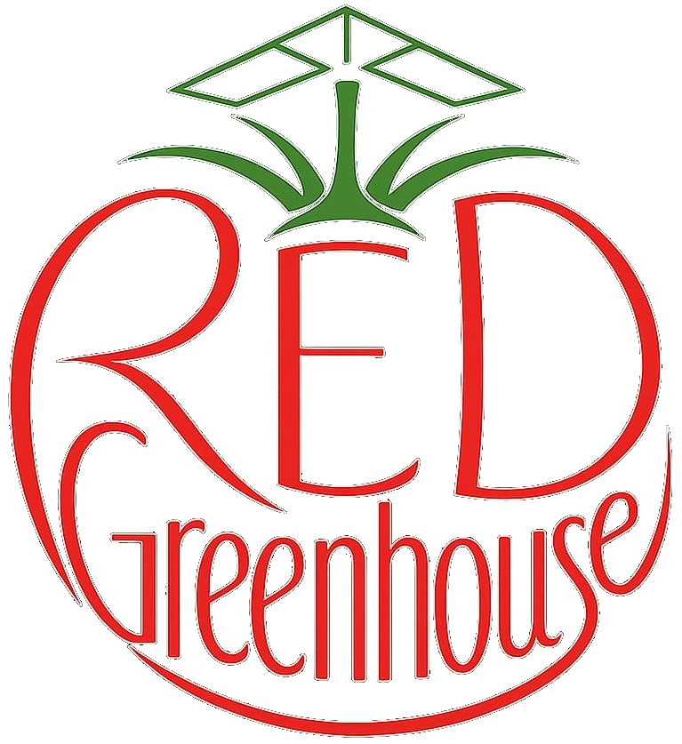
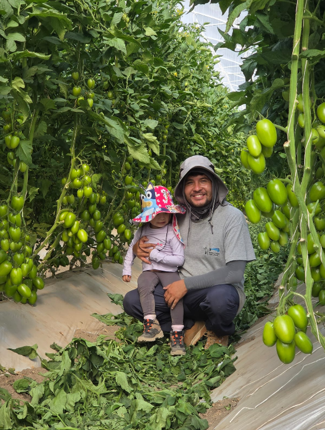

Jitomate
Producción en invernadero con seguimiento por variedad y ciclo productivo.

RED Greenhouse produce jitomate bajo procesos orientados a la calidad, la trazabilidad y la mejora continua.
Trabajamos para consolidar una operación productiva, ordenada y verificable, donde la inocuidad forme parte del trabajo diario.
Producción en invernadero con seguimiento por variedad y ciclo productivo.
Infraestructura enfocada en control, rendimiento y cuidado del producto.
Procesos documentados para mantener evidencia y facilitar auditorías.
Estamos preparando nuestro Sistema de Reducción de Riesgos de Contaminación.
Producción, cultivo y trabajo diario en RED Greenhouse.

Para información comercial, alianzas o visitas, comunícate con RED Greenhouse.
Correo
contacto@redgreenhouse.mx
Ubicación
Puebla, México
Dashboard ejecutivo
Para cumplir con la fecha del 11 de agosto de 2026, es necesario completar las tareas críticas pendientes.
Acciones clave para construir la carpeta SRRC.
Monitor operativo de implementación
Catálogo único para alimentar los documentos de la carpeta física.
Este porcentaje actualiza automáticamente la tarea “Capturar Datos Maestros”.
Solamente datos que ayudan a completar los Excel SRRC.
Relación entre cada dato maestro y los módulos donde se utiliza o probablemente se utilizará.
Vista estructurada de la información que deberá trasladarse a los Excel y a la carpeta física.
Sube y administra las fotografías que aparecen en el sitio público.
Seguridad, almacenamiento y configuración general.
Cambia la contraseña básica de acceso al portal privado.
Configuración para almacenar imágenes y recuperarlas al volver al módulo.
Información de esta versión.
Esta sección se integrará en las siguientes versiones del portal.